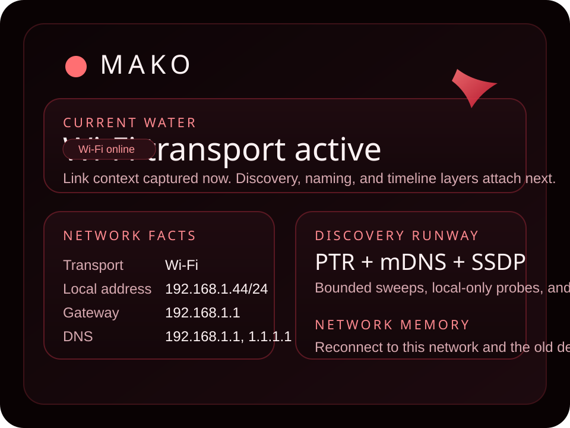

Network identity
Capture the active link context first, then derive a durable network record from Wi-Fi and link evidence instead of trusting SSID alone.
MAKO is a local-first Android situational awareness app for the Wi-Fi network you are on. It is being built to identify the current network, discover nearby hosts with DNS and local-service tricks, actively fingerprint them when you allow it, and keep that memory per network instead of blending every place together.

The product shape mirrors `unagi` operationally but swaps Bluetooth for Wi-Fi network intelligence. One network record per Wi-Fi network. One device inventory scoped to that network. One timeline that shows what changed there over time.
Capture the active link context first, then derive a durable network record from Wi-Fi and link evidence instead of trusting SSID alone.
Use bounded subnet sweeps, PTR lookups, mDNS, SSDP, and related local discovery paths to find peers without turning the app into an internet scanner.
Persist arrivals, departures, renames, and fingerprint changes so reconnecting to a known network restores what was already learned there.
The repo uses the same CLI-first Android workflow as `unagi`: pinned Gradle and AGP versions, Gradle wrapper, command-line SDK tools, and an APK staging script that updates this page.
Build and install through the wrapper, `adb`, and the command-line SDK only.
`scripts/stage-apk` copies `app-debug.apk` into `downloads/` as `mako-vX.Y.Z-debug.apk` and rewrites landing-page links.
Architecture, privacy, and backlog documents live in the repo root so the implementation process remains visible.
MAKO should stay explicit about what was observed versus what was inferred. DNS names, banners, and service descriptors are evidence, not truth. Active fingerprinting should stay local, bounded, and obvious when it is happening.